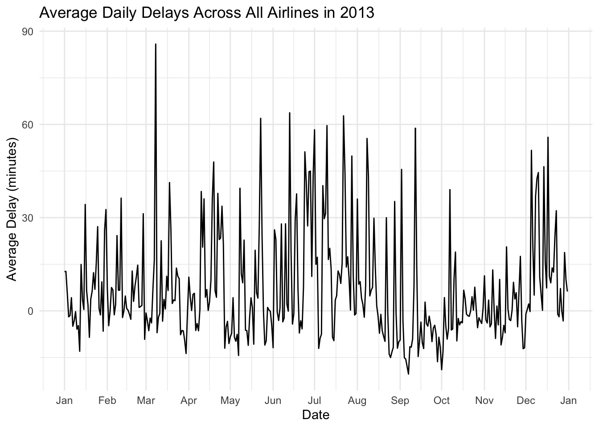
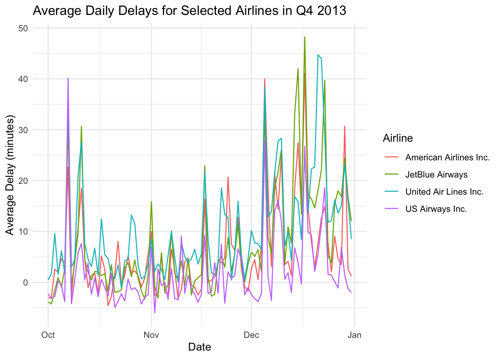
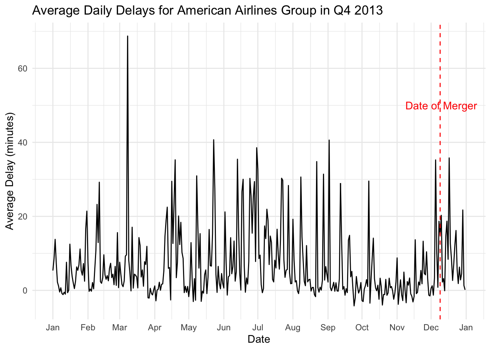
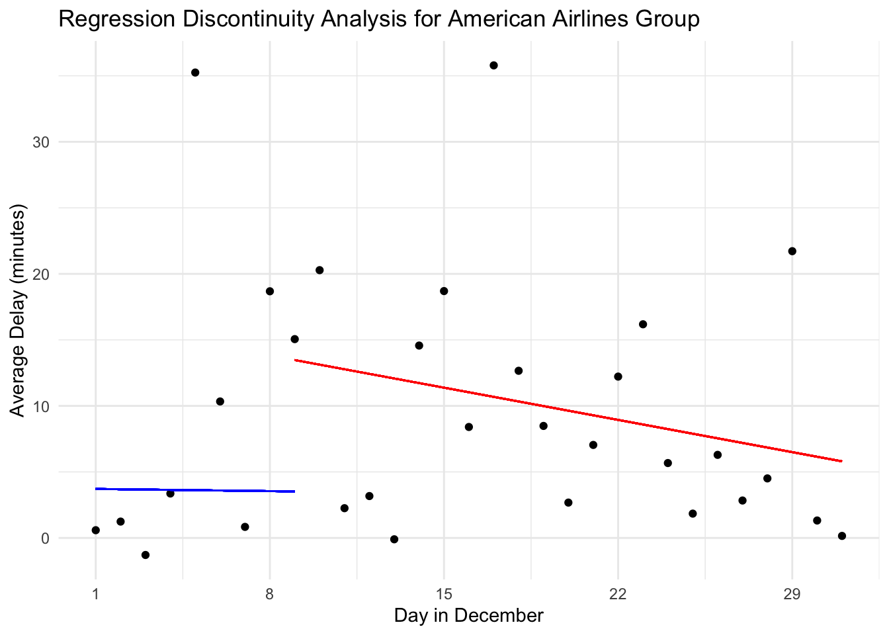

# A tibble: 16 × 2
name Count
<chr> <int>
1 United Air Lines Inc. 58665
2 JetBlue Airways 54635
3 ExpressJet Airlines Inc. 54173
4 Delta Air Lines Inc. 48110
5 American Airlines Inc. 32729
6 Envoy Air 26397
7 US Airways Inc. 20536
8 Endeavor Air Inc. 18460
9 Southwest Airlines Co. 12275
10 Virgin America 5162
11 AirTran Airways Corporation 3260
12 Alaska Airlines Inc. 714
13 Frontier Airlines Inc. 685
14 Mesa Airlines Inc. 601
15 Hawaiian Airlines Inc. 342
16 SkyWest Airlines Inc. 32Final Assignment
ECON 636 Final Assignment
Trent Arney
In the ‘NYCFlights13’ dataset, flights out of NYC are recorded over the year of 2013. 16 different airlines are recorded to have flown out of NYC in the dataset. United Air Lines Inc. had the most flights (58,665) while SkyWest Airlines Inc. had the least (32).
One thing everybody laments when flying is delays. Flight delays can drive headache, anxiety, and may even cause you to miss a connecting flight. Uprising to me, and I would imagine to most, is that flight delays are not very consistent and don’t tend to follow a trend.

When we break this down by airline and just look at a few, we can see that there are delays across airlines that happen at the same time, but there is still quite a bit of variability between different airlines.

On December 9th, 2013, American Airlines and US Airways merged, forming one of the largest airlines in the world, now known as the American Airlines Group. I am curious if the result of this merger resulted in a change in delays for these two merged Airlines. On one hand, there could be an increase in delays immediately following the merger, due to more time and effort being devoted to the merger rather than logistics. On the other hand, American Airlines’ and US Airways’ industry knowledge could combine to result in more efficient logistics, and in turn, lower delays.
To test this hypothesis, we will conduct a Regression Discontinuity Design (RDD) to determine if there was any causal impact of this merger on delayed flights.
Taking an initial look at American Airlines Group’s Delays, at the date of the merger (12/9/13), it looks like there is a jump in the average delay, but it isn’t entirely clear if this is sustained. The RDD should clarify this for us.

According to the results of the RDD (as shown below), there appears to be a significant jump in the average delay immediately following the merger date. We want to see a P-value (noted as Pr(>|t|)) of less than 0.05 on the ‘merger’ variable to indicate any significant shifts, and the P-value on the merger value is .0286, indicating there was a significant change on 12/9/13. We can tell that there is a negative trend in average delay following the merger date, but we don’t have enough data to tell if it returns to normal.
Call:
lm(formula = AvgDelay ~ day + merger + day * merger, data = RDD_data)
Residuals:
Min 1Q Median 3Q Max
-12.186 -4.529 -2.071 2.162 31.631
Coefficients:
Estimate Std. Error t value Pr(>|t|)
(Intercept) 3.7354 2.2908 1.631 0.1085
day -0.0237 0.1437 -0.165 0.8696
merger 12.8839 5.7364 2.246 0.0286 *
day:merger -0.3252 0.2880 -1.129 0.2635
---
Signif. codes: 0 '***' 0.001 '**' 0.01 '*' 0.05 '.' 0.1 ' ' 1
Residual standard error: 7.94 on 57 degrees of freedom
Multiple R-squared: 0.1589, Adjusted R-squared: 0.1146
F-statistic: 3.589 on 3 and 57 DF, p-value: 0.01902We can visualize this (statistically insignificant) change in the trend in the plot below:

In conclusion, it appears that the Merger between American Airlines and US Airways (forming American Airlines Group) resulted in an immediately higher average delay. The delays appear to be trending back to normal some time after the merger, but we don’t have enough data following the merger to be certain.